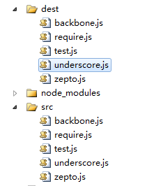

前言
上一篇博客，我们简单的介绍了grunt的使用，一些基础点没能覆盖，我们今天有必要看看一些基础知识
配置任务/grunt.initConfig
前面我们简单的介绍了grunt相关的知识，这里我们这里还需要再熟悉下Gruntfile相关的知识点，比如说配置任务
grunt的任务配置都是在Gruntfile中的grunt.initConfig方法中指定的，这个配置主要都是一些命名性属性
比如我们上次用到的合并以及压缩的任务配置：
grunt.initConfig({ concat: { //这里是concat任务的配置信息 }, uglify: { //这里是uglify任务的配置信息 }, //任意非任务特定属性 my_property: 'whatever', my_src_file: ['foo/*.js', 'bar/*.js'] });
其中的my_property完全可能读取外部json配置文件，然后在上面任务配置中便可以，比如我们要压缩的文件为准或者最后要放到哪里，便可以在此配置
我们使用grunt的时候，主要工作就是配置任务或者创建任务，实际上就是做一个事件注册，然后由我们触发之，所以grunt的核心还是事件注册
每次运行grunt时，我们可以指定运行一个或者多个任务，通过任务决定要做什么，比如我们同时要压缩和合并还要做代码检查
grunt.registerTask('default', ['jshint','qunit','concat','uglify']);
当运行一个基本任务时，grunt并不会查找配置和检查运行环境，他仅仅运行指定的任务函数，可以传递冒号分割参数，比如：
grunt.registerTask('foo', 'A sample task that logs stuff.', function (arg1, arg2) {
if (arguments.length === 0) {
grunt.log.writeln(this.name + ", no args");
} else {
grunt.log.writeln(this.name + ", " + arg1 + " " + arg2);
}
});
运行结果如下：
$ grunt foo:testing:123 Running "foo:testing:123" (foo) task foo, testing 123 $ grunt foo:testing Running "foo:testing" (foo) task foo, testing undefined $ grunt foo Running "foo" task foo, no args
这里有个多任务的情况，就是一个任务里面实际上第一了多个东东，这个时候就有所不同
grunt.initConfig({ log: { demo01: [1,2,3], demo02: 'hello world', demo03: false } }); grunt.registerTask('log','log stuff.', function(){ grunt.log.writeln(this.target + ': ' + this.data); });
如果我们运行，运行情况如下：
???????
更多时候，我们实际场景中都会需要自定义任务，而在我们任务内部使用 grunt.task.run({}) 运行任务
这块的知识点，我们后面以实际例子说明
grunt插件
学习grunt主要就是学习grunt的插件使用，所以我们今天先来学习常用的几个插件
grunt-contrib-unglify
我们仍然以简单例子学习
module.exports = function (grunt) { grunt.initConfig({ uglify: { my_target: { files: { 'dest/libs.min.js': ['src/zepto.js', 'src/underscoce.js'] } } } }); grunt.loadNpmTasks('grunt-contrib-uglify'); }
这样会将src里面的zepto等文件打包值dest的lib.min.js中
压缩一个文件夹的所有文件
然后这段代码非常有意思，他会将一个文件目录里面的所有js文件打包到另一个文件夹
module.exports = function (grunt) { grunt.initConfig({ uglify: { my_target: { files: [{ expand: true, cwd: 'src', src: '**/*.js', dest: 'dest' }] } } }); grunt.loadNpmTasks('grunt-contrib-uglify'); }

若是你希望给你文件的头部加一段注释性语言配置banner信息即可
grunt.initConfig({ pkg: grunt.file.readJSON('package.json'), uglify: { options: { banner: '/*! 注释信息 */' }, my_target: { files: { 'dest/output.min.js': ['src/input.js'] } } } });
grunt-contrib-concat
该插件主要用于代码合并，将多个文件合并为一个，我们前面的uglify也提供了一定合并的功能
在可选属性中我们可以设置以下属性：
① separator 用于分割各个文件的文字，
② banner 前面说到的文件头注释信息，只会出现一次
③ footer 文件尾信息，只会出现一次
④ stripBanners去掉源代码注释信息（只会清楚/**/这种注释）
一个简单的例子：
module.exports = function (grunt) { grunt.initConfig({ concat: { options: { separator: '/*分割*/', banner: '/*测试*/', footer: '/*footer*/' }, dist: { src: ['src/zepto.js', 'src/underscore.js', 'src/backbone.js'], dest: 'dist/built.js', } } }); grunt.loadNpmTasks('grunt-contrib-concat'); }
合并三个文件为一个，这种在我们源码调试时候很有意义
构建两个文件夹
有时候我们可能需要将合并的代码放到不同的文件，这个时候可以这样干
module.exports = function (grunt) { grunt.initConfig({ concat: { basic: { src: ['src/zepto.js'], dest: 'dest/basic.js' }, extras: { src: ['src/underscore.js', 'src/backbone.js'], dest: 'dest/with_extras.js' } } }); grunt.loadNpmTasks('grunt-contrib-concat'); }
这种功能还有这样的写法：
module.exports = function (grunt) { grunt.initConfig({ concat: { basic_and_extras: { files: { 'dist/basic.js': ['src/test.js', 'src/zepto.js'], 'dist/with_extras.js': ['src/underscore.js', 'src/backbone.js'] } } } }); grunt.loadNpmTasks('grunt-contrib-concat'); }
第二种写法便于使用配置文件，具体各位选取吧，至于读取配置文件的东西我们这里就先不关注了
grunt-contrib-jshint
该插件用于检测文件中的js语法问题，比如我test.js是这样写的：
alert('我是叶小钗')
module.exports = function (grunt) { grunt.initConfig({ jshint: { all: ['src/test.js'] } }); grunt.loadNpmTasks('grunt-contrib-jshint'); }
运行结果是：
$ grunt jshint Running "jshint:all" (jshint) task Linting src/test.js ...ERROR [L1:C15] W033: Missing semicolon. alert('我是叶小钗')
说我缺少一个分号，好像确实缺少.....如果在里面写明显的BUG的话会报错
多数时候，我们认为没有分号无伤大雅，所以，我们文件会忽略这个错误：
jshint: { options: { '-W033': true }, all: ['src/test.js'] }
这里有一个稍微复杂的应用，就是我们合并之前做一次检查，合并之后再做一次检查，我们可以这样写
module.exports = function (grunt) { grunt.initConfig({ concat: { dist: { src: ['src/test01.js', 'src/test02.js'], dest: 'dist/output.js' } }, jshint: { options: { '-W033': true }, pre: ['src/test01.js', 'src/test02.js'], after: ['dist/output.js'] } }); grunt.loadNpmTasks('grunt-contrib-concat'); grunt.loadNpmTasks('grunt-contrib-jshint'); }
$ grunt jshint:pre concat jshint:after Running "jshint:pre" (jshint) task >> 2 files lint free. Running "concat:dist" (concat) task File "dist/output.js" created. Running "jshint:after" (jshint) task >> 1 file lint free.
这里连续运行了三个任务，先做检查再合并，然后做检测，我这里写了两个简单的文件，如果将jquery搞进去的话，好像还出了不少BUG......
所以真的要用它还要自定一些规范，我们这里暂时到这里，先进入下一个插件学习
grunt-contrib-requirejs
我们的grunt打包程序极有可能与requirejs一起使用，但是几个插件学习下来又属requireJs的使用最为麻烦，因为网上资源很少，搞到这一段耗掉了我很多精力
这个时候你就会感叹，英语好不一定编程好，英语差想成为高手还是不简单啊！！！
requirejs: { compile: { options: { baseUrl: "path/to/base", mainConfigFile: "path/to/config.js", name: "path/to/almond", // assumes a production build using almond out: "path/to/optimized.js" } } }
官方的例子首先就是这几个属性：
baseUrl 代表所有的js文件都会相对于这个目录
mainConfigFile 配置文件目录
name ？？？
out 输出文件
一些参数我们不太了解，这个时候就只能以例子破之了
module.exports = function (grunt) { grunt.initConfig({ requirejs: { compile: { "options": { "baseUrl": "./", "paths": { "$": "src/zepto", "_": "src/underscore", "B": "src/backbone", "Test": "src/Test01" }, "include": [ "$", "_", "B", "Test" ], "out": "dest/libs.js" } } } }); grunt.loadNpmTasks('grunt-contrib-requirejs'); }

这样配置后，会将include里面的文件打包为out对应的文件，paths的本身意义不大，就是用于配置include里面的指向
这个时候我们来加个name看看有神马作用：
module.exports = function (grunt) { grunt.initConfig({ requirejs: { compile: { "options": { "baseUrl": "./", "name": 'src/test02.js', "paths": { "$": "src/zepto", "_": "src/underscore", "B": "src/backbone", "Test": "src/Test01" }, "include": [ "$", "_", "B", "Test" ], "out": "dest/libs.js" } } } }); grunt.loadNpmTasks('grunt-contrib-requirejs'); }
这样的话，会将name对应文件压缩到压缩文件的最前面，但是具体是干什么的，还是不太清楚，其英文注释说是单个文件或者其依赖项优化，不知道优化什么啊。。。囧！！！
requireJS基本的用法就是这样了，其详细信息，我们过段时间再来看看，下面说一下requireJS的其它用法
我们这里将requireJS的配置信息放在外面，而Gruntfile采用自定义任务的方式完成上面的功能
配置文件/cfg.json
{requirejs: { "options": { "baseUrl": "./", "paths": { "$": "src/zepto", "_": "src/underscore", "B": "src/backbone", "Test": "src/Test01" }, "include": [ "$", "_", "B", "Test" ], "out": "dest/libs.js" } }}
然后，这里我们便不是有initConfig的做法了，直接使用自定义任务
module.exports = function (grunt) { grunt.loadNpmTasks('grunt-contrib-requirejs'); grunt.registerTask('build', 'require demo', function () { //第一步，读取配置信息 var cfg = grunt.file.readJSON('cfg.json'); cfg = cfg.requirejs; grunt.config.set('requirejs', { test: cfg }); //第二步，设置参数 grunt.log.debug('参数：' + JSON.stringify(grunt.config())); //第三步跑任务 grunt.task.run(['requirejs']); }); }
$ grunt build --debug Running "build" task [D] Task source: d:\grunt\Gruntfile.js [D] 参数：{"requirejs":{"test":{"options":{"baseUrl":"./","paths":{"$":"src/zept o","_":"src/underscore","B":"src/backbone","Test":"src/Test01"},"include":["$"," _","B","Test"],"out":"dest/libs.js"}}}} Running "requirejs:test" (requirejs) task [D] Task source: d:\grunt\node_modules\grunt-contrib-requirejs\tasks\requirejs.j s >> Tracing dependencies for: d:/grunt/dest/libs.js >> Uglifying file: d:/grunt/dest/libs.js >> d:/grunt/dest/libs.js >> ---------------- >> d:/grunt/src/zepto.js >> d:/grunt/src/underscore.js >> d:/grunt/src/backbone.js >> d:/grunt/src/Test01.js
效果还是有的，最后我们介绍下requireJS打包模板文件
require与模板文件
我们知道，模板文件一般都是html，比如我们这里的demo01.html，对于这个文件我们应该怎么打包呢？其实很简单......
需要干两件事情：
① 引入require.text
② 加入模板文件
{ "requirejs": { "options": { "baseUrl": "./", "paths": { "$": "src/zepto", "_": "src/underscore", "B": "src/backbone", "test": "src/test01", "text": "src/require.text" }, "include": [ "$", "_", "B", "test", "text!src/demo01.html" ], "out": "dest/libs.js" } } }
于是，我们便成功将模板打入了
$ grunt build --debug Running "build" task [D] Task source: d:\grunt\Gruntfile.js [D] 参数：{"requirejs":{"test":{"options":{"baseUrl":"./","paths":{"$":"src/zept o","_":"src/underscore","B":"src/backbone","test":"src/test01","text":"src/requi re.text"},"include":["$","_","B","test","text!src/demo01.html"],"out":"dest/libs .js"}}}} Running "requirejs:test" (requirejs) task [D] Task source: d:\grunt\node_modules\grunt-contrib-requirejs\tasks\requirejs.j s >> Tracing dependencies for: d:/grunt/dest/libs.js >> Uglifying file: d:/grunt/dest/libs.js >> d:/grunt/dest/libs.js >> ---------------- >> d:/grunt/src/zepto.js >> d:/grunt/src/underscore.js >> d:/grunt/src/backbone.js >> d:/grunt/src/test01.js >> d:/grunt/src/require.text.js >> text!src/demo01.html
在文件中我们引用方式是：
"text!src/demo01.html" => '具体文件'
打包样式文件
样式文件的打包方式与js不太一样，这里我们下载css-min插件，并且在package.json中新增依赖项
{ "name": "demo", "version": "0.1.0", "description": "demo", "license": "MIT", "devDependencies": { "grunt": "~0.4.1", "grunt-contrib-jshint": "~0.6.3", "grunt-contrib-concat": "~0.3.0", "grunt-contrib-uglify": "~0.2.1", "grunt-contrib-requirejs": "~0.4.1", "grunt-contrib-copy": "~0.4.1", "grunt-contrib-clean": "~0.5.0", "grunt-strip": "~0.2.1", "grunt-contrib-watch": "~0.6.0", "grunt-contrib-cssmin": "~0.5.0" }, "dependencies": { "express": "3.x" } }
module.exports = function (grunt) { grunt.initConfig({ cssmin: { compress: { files: { 'dest/car.min.css': [ "src/car.css", "src/car01.css" ] } } } }); grunt.loadNpmTasks('grunt-contrib-cssmin'); }
如此一来我们便可以压缩合并CSS文件了：
$ grunt cssmin --debug Running "cssmin:compress" (cssmin) task [D] Task source: d:\grunt\node_modules\grunt-contrib-cssmin\tasks\cssmin.js File dest/car.min.css created.
下集预告
今天，我们一起来学习了一些grunt打包的基础知识，明天我们就进行下面的学习，简单结束这一轮grunt相关的知识
1 移动打包文件
我们的开发版本与使用版本可能不在一个位置哦
2 分支处理
不同分支打包
3 native包与HTML5包
在HTML5嵌入webview的时代，我们当然存在一次打包既要形成网站文件也要形成app文件
4 分频道打包
当然可能存在分频道分分支打包的情况
今日到此为止，待续......